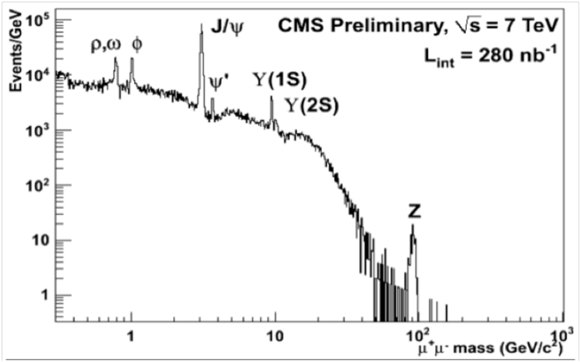
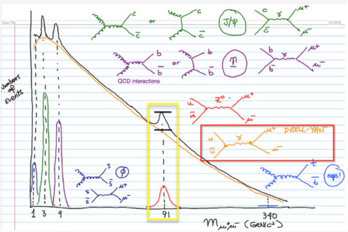

|
Here's the dimuon mass spectrum from preliminary CMS run data. Think of this histogram as pairs of muons ordered in stacks according to a property called invariant mass, which is roughly just the sum of the kinetic energy of both muons in each pair.  Notice that this histogram has an overall shape, with notable peaks identified with symbols representing particles (ρ, ω, ψ, Z, etc.). Each of these notable peaks (and the underlying shape, too) is due to a different physical process. Each of these physical processes can in principle produce pairs of muons of many different invariant masses, though each tends to produce more pairs around a given average value. Under the J/Psi peak, for example, are many events produced by J/Psi decay but many others produced by quarks decaying to two muons. Dimuon events of any given invariant mass can be produced by a number of different physical processes, but at a given mass they are more likely to come from some processes than others. Now consider the hand-drawn conceptual representation of the dimuon mass spectrum, below.  On it, Feynman diagrams for some of the most prominent physical processes are drawn and color-coded to features of that spectrum. Consider just the section outlined in the yellow box, and notice the two black lines drawn above 91 GeV. One of these represents a number of events with 91 GeV dimuon mass that would be expected just from the Drell-Yan physical process, and the other (higher line), the total number of such events from both the Drell-Yan and the Z decay processes. Notice that most of the 91 GeV events are due to the Drell-Yan peak, which distributes all across the spectrum but in a way decreasing with mass. So (according to this drawing, which is not quantitatively accurate) whenever we look at a 91 GeV single event candidate, we are probably looking at an event produced by the Drell-Yan process. But if we look at enough of such events, we'll see a concentration of them that is higher at 91 GeV than we would have expected from Drell-Yan processes alone. That higher concentration is a pattern in the histogram that we explain by reference to the decay of the Z boson. It is this kind of statistical pattern that we explain by reference to physical processes like the Z decay. We cannot explain the causes of the individual events themselves. (Learn more.) |
|
Displaying Multiple events - Close Window |